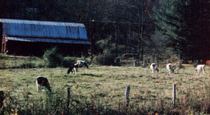
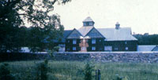

The future of our civilization may well be tied to that of our independently owned, agricultural enterprises. Therefore, it should be a mattered of concern to everyone that there's...
American agriculture is in a state of crisis, and the future of the family farm-an institution often considered to be a cornerstone of our society-looks grim.
The signs of trouble are everywhere . . . in the protest parades of tractors, in the strange combination of high food prices and low farm income, and in the declining number of working agricultural operations. As a matter of fact, while there were 6.8 million U.S. farms in 1935, the total had dropped to 2.3 million by 1974. . . and that figure is expected to decline to 1.5 million by the end of this year !
Of course, the powers that be in American agriculture have ways of explaining away even such shocking evidence. It is often claimed, for instance, that the statistics just reflect the weeding out of small, inefficient enterprises . . . and we're constantly told that our farms are producing more than ever before .
Aren't we, then, just seeing the "economics of size" at work in rural America? Well, maybe. The number of small "noncommercial" farms-defined by the USDA as those with sales of less than $2,500 a year-declined from 2,388,000 in 1949 to just 771,000 in 1974. During the same period, the quantity of small "commercial" farms-operations with sales of between $2,500 and $40,000-shrank, too . . . from 2,893,000 to 1,218,000. Only the large commercial farms-those with sales of over $40,000-increased ... from 104,000 in 1949 to 477,000 i n 1974.
Among the big farms, the very largest -with sales of over $200,000-multiplied most rapidly ... from 16,000 to 63,000! And the large agricultural concerns didn't grow just in number . . . they increased in size, too: The average U.S. farm in 1940 covered 197 acres, but by 1974 the average had grown to 440 acres.
All in all, it appears that the American farmer has been following the "get big or get out" advice of former Secretary of Agriculture Earl Butz. And economies of scale do seem-at least on the face of the matter-to make good sense. However, the USDA has discovered that the "bigger is more efficient" argument isn't all it's cracked up to be. In fact, Department of Agriculture economist Thomas Miller has reported that medium-sized farms (with gross sales from $20,000 to $100,000) are most efficient! Above the $20,000 threshold, says Miller, there are no important reductions in the unit cost of production. So farms grow beyond medium size not because it's less expensive to produce each bushel of wheat when you're one of the "big boys" . . . but simply because the overgrown acreages can produce-and sell-more bushels of wheat.
Now a grower's desire to raise more wheat-or corn, or oats, or soybeans-is understandable, but the course of action that must be taken to do so does have several hidden consequences. For one thing, large-scale farmers-with good access to credit-often bid up the price of available land ... and the result is that small growers cannot afford to buy or lease additional acreage.
Worse yet, as the sales value of the land in an area rises, taxes follow suit . . . again putting economic stress on the family farmer. Furthermore, the problems are aggravated because-according to a recent USDA study-federal and state tax laws give special tax benefits to high-income farmland buyers ... and such laws have created incentives for farmers to shift their attention from efficiency and productivity to farm expansion, and to the appreciation of land values as an end in itself.
Even the federal commodity programs-supposedly designed to help growers when crop prices are depressed -accelerate the trend toward fewer, but larger, farms. A USDA report indicates that most price supports don't differentiate between family farms-the natural target of such aid-and corporate farms . . . and thus the programs provide the largest amount of assistance to the giant enterprises that produce the most.
And-in a self-perpetuating cycle-the corporate farmers often apply that "bonus" money to underwrite even further expansion! What's more, income support and disaster payment-as well as commodity-programs tend to encourage the large-scale, single-purpose farms ... often operations that are bankrolled by nonfarm investors, who use highly leveraged debt financing.
As you can imagine, such economic factors often force smaller-scale farmers either to expand, abandon production, or become part-time growers . . . and the last two choices-given the limited capital of most family operations-are the ones frequently taken. Well, you might ask, why not? Why shouldn't the most efficient and best-capitalized farmers drive the inefficient little guys out of business?
Aside from the ethics of the situation, the best answer to such questions is simply that our present system isn't working. The fact is that much of America's fabled agricultural productivity is based on large chemical- and energy-intensive monoculture (single-crop) operations. And-as we approach the end of the century-it's going to become more and more difficult, and expensive, to maintain the kinds of farms that we've come to depend upon.
In the USDA's, "Report and Recommendations on Organic Farming" [EDITOR'S NOTE: See page 175 of MOTHER NO. 66-available for $3.00 plus $1.00 shipping and handling from THE Mother Earth News, P.O. Box 70, Hendersonville, North Carolina 28791-for a brief summary of this study] , deep concern is expressed about the probable future repercussions of such practices as intensive and continuous production of cash grains, and extensive and often excessive use of chemicals. The report team cites especially the danger of sharply increasing costs (and uncertain availability) of energy and of chemical fertilizers . . . the steady decline in soil productivity and tilth resulting from excessive erosion and loss of soil organic matter . . . and the problems resulting from the pollution of natural waters by agricultural chemicals.
Unfortunately, the cost of agricultural land is often so high that many farmers feel compelled to extract every last bushel from their acreage .. . and that fact encourages practices that destroy the land. As author Mark Kramer points out, "When short-term demand makes the squander ing of resources profitable, resources are squandered. Farmers farm as their situations dictate." [ EDITOR'S NOTE: Kramer's book Three Farms: Making Milk, Meat and Money from the American Soil (Little, Brown, 1980, $11.95) takes a thoughtful look at our agricultural difficulties.]
The problem, in short, is that we're putting all of our agricultural eggs in one large money-, chemical-, and energy-intensive basket .. . and, in the process, we're allowing our backup systems-the family farms-to be swallowed up or abandoned.
When the last drop of oil is extracted from the ground, we may welt not be able (even if there were a rational reason for doing so) to ship a carrot 2,500 miles from producer to consumer. We've encouraged big agriculture (both farmers and market ers) in the name of a search for inexpensive food . . . but food is no longer inexpensive. And the average family farm has not seen its income grow . . . despite the higher cost to consumers of its goods.
That's why there have been tractor parades at the Capitol, and that's why we need to be concerned about the future of the family farm.
EDITOR'S NOTE: There is some occasion for optimism, in spite of our current agricultural dilemma. Notably, the Family Farm Development Act of 1980, as proposed by Representatives Richard Nolan of Minnesota and George Brown of California, could aid the small-scale grower. I nformation on the bill is available from the offices of the two congressmen, or from the National Family Farm Coalition, Dept. TMEN, 918 F Street N. W., 2nd Floor, Washington, D .C. 20004. Another encouraging sign is the positive attention that the USDA has been paying to organic agriculture. And perhaps most important of all is the fact that private parties are beginning to address the problems facing the family farm: One example is described in the sidebar below.
Our future doesn't have to be dismal, and a group that's pointing the way for family farms-and providing a model that shows how pleasant and productive the years to come can be-is responsible for . . .
Shelburne Farms-which occupies some 1,700 rolling acres on the Vermont shore of Lake Champlain-is hardly a typical family farm operation ... even though it has been owned by the same family for nearly 100 years. Shelburne began, you see, as a rich man's agricultural estate ... an experimental farm put together by a person with enough time, money, and drive to seek agricultural perfection.
The land-use design for the property was done by Frederick Law Olmstead, the architect of New York's Central Park . . . and owner William Seward Webb planted forests, raised livestock, grew field crops, and installed orchards. The enterprise flourished. By 1890, Shelburne Farms harvested rye, oats, and wheat . . . sold butter, milk, eggs, and apples to the New York markets . . . and had under construction greenhouses, dairy barns, and sheep and poultry pens.
Over the course of the next 70 years, Shelburne Farms always paid its own way . . . the small profit turned in during some years served to cancel out the minor losses incurred in others. By the 1960's, however, the agricultural estate began to look like a "white elephant" property. Taxes had risen and were continuing to rise, and the expansion of the nearby city of Burlington was rapidly driving up the price of land . . . which added to the tax burden.
When Shelburne's annual tax bill climbed to $50,000, Derick Webb-the farm's present owner-called a family meeting. He explained the economics of the situation . . . and then asked his children what they wanted to do with their inheritance. Unanimously, they chose to resist the easy money that could be had by developing the property for homesites. The family members all felt that their historic homestead was too valuable an agricultural, historic, and environmental resource to sell off piecemeal.
So in 1972-with money provided by the sale of an adjacent piece of land to the Nature Conservancy- ''Shelburne Farms Resources" was organized as a non-profit educational corporation. The goal of SFR is to develop an integrated use of the farm's assets . . . employing the property to teach land management techniques, to experiment with new crops for the Northeast, and to apply primarily wholistic methods to relatively large-scale farming. The Webb family believed that Shelburne Farms could function as a magnet, attracting attention-because of its history, its architectural excellence, and its beauty-to innovative farm ideas.
The development of creative forms of crop marketing has also been im portant to Shelburne Farms. Several members of the Webb family helped to organize Vermont's first modern farmers' market, so that growers would have a local outlet for their goods. And, in an even more innovative move, the owners leased spacein the huge central structure known to everyone as the Farm Barn-to small enterprises that would use Shelburne products. These include a bakery (getting its flour from farm-grown wheat), a weaving shop (obtaining wool from the farm's sheep), and a cabinetmaker (working with wood from the estate's forest).
In a sense, Shelburne is reinventing the village for the post-hydrocarbon society that may well be a part of our future. There are even plans afoot to create a small group of homes on the farm, for folks who draw their living from the acreage!
Shelburne Farms hasn't overlooked agricultural innovation, either. The SFR has established a test plot of some 1.500 black walnut trees. representing 60 different varieties. The farm's organization-in cooperation with the University of Vermont-is examining the potential of this dual-purpose silviculture, in which an annual cash crop of nuts helps to pay costs while the trees grow to marketable timber size.
Fields of barley have been planted in an attempt to discover whether that grain can be grown for feed in New England as an alternative to corn. (Barley produces a lower yield than corn, but requires much less energy to grow.) And, for fertilizer, Shelburne-again, with the cooperation of the University of Vermont-is testing the use of sewage sludge. Furthermore, the farm boasts the state's only raw-milk dairy . . . and will soon begin to generate methane from the cow manure produced by that operation.
Shelburne Farms is, then, an experiment in "re-regionalizing" . . . in developing appropriate methods of responding to some of the problems facing America's family farms. By shifting their focus from a national market to a regional and local one, the Webbs have been able to revive some locally neglected techniques (such as the farmers' market) and to introduce new crops to what had become Vermont's milk monoculture. As teaching and example-setting operations like Shelburne Farms spring up across the country-and MOTHER firmly hopes and believes that they will-the family farm may find a new lease on life in America!
EDITOR'S NOTE: As a final step in saving Shelburne Farms, SFR is about to acquire-at half price-the ownership of the farm's land from the Webb family. If you would like to make a tax-deductible contribution to SFR's operations, write to Shelburne Farm Resources, Dept. TMEN, Shelburne, Vermont 05482. An information package about SFR (and about the courses they cosponsor with the University of Vermont) is available from the same address . . . please include $1.00 for postage and handling costs when you write.
|
 |
 |
|